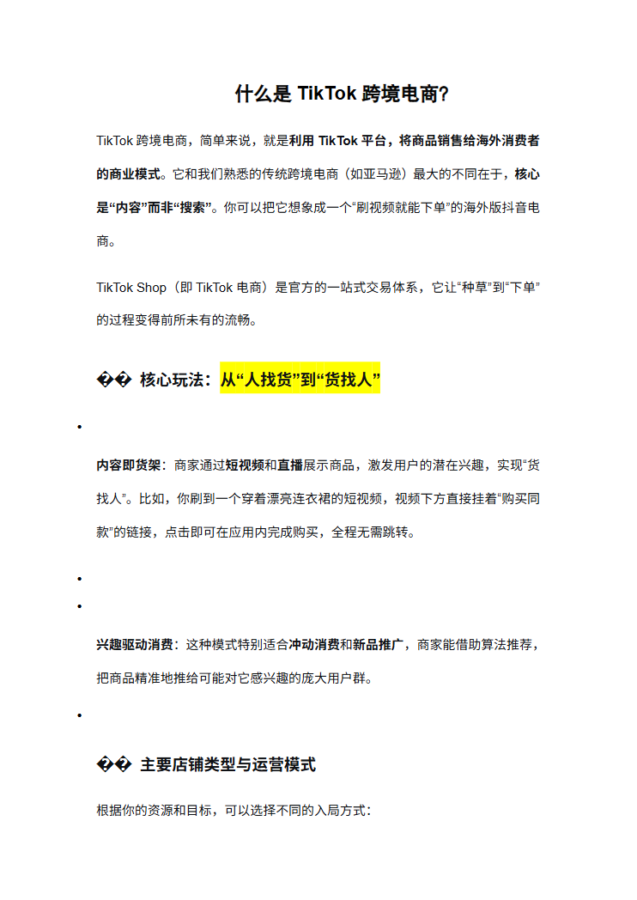
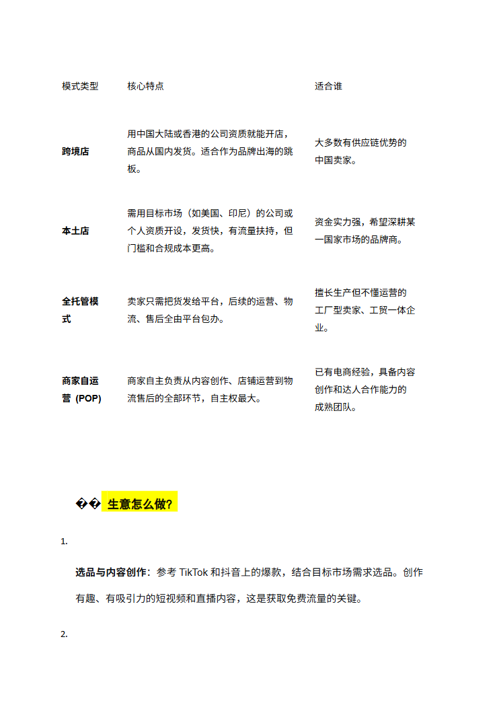
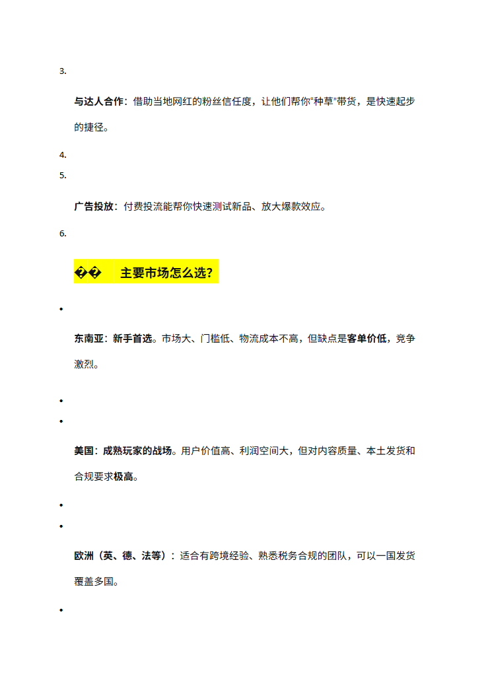

第 1 页

查看文字
什么是TikTok跨境电商？TikTok跨境电商，简单来说，就是利用TikTok平台，将商品销售给海外消费者的商业模式。它和我们熟悉的传统跨境电商（如亚马逊）最大的不同在于，核心是“内容”而非“搜索”。你可以把它想象成一个“刷视频就能下单”的海外版抖音电商。TikTokShop（即TikTok电商）是官方的一站式交易体系，它让“种草”到“下单”的过程变得前所未有的流畅。��核心玩法：从“人找货”到“货找人”内容即货架：商家通过短视频和直播展示商品，激发用户的潜在兴趣，实现“货找人”。比如，你刷到一个穿着漂亮连衣裙的短视频，视频下方直接挂着“购买同款”的链接，点击即可在应用内完成购买，全程无需跳转。兴趣驱动消费：这种模式特别适合冲动消费和新品推广，商家能借助算法推荐，把商品精准地推给可能对它感兴趣的庞大用户群。��主要店铺类型与运营模式根据你的资源和目标，可以选择不同的入局方式：
第 2 页

查看文字
模式类型核心特点适合谁跨境店用中国大陆或香港的公司资质就能开店，商品从国内发货。适合作为品牌出海的跳板。大多数有供应链优势的中国卖家。本土店需用目标市场（如美国、印尼）的公司或个人资质开设，发货快，有流量扶持，但门槛和合规成本更高。资金实力强，希望深耕某一国家市场的品牌商。全托管模式卖家只需把货发给平台，后续的运营、物流、售后全由平台包办。擅长生产但不懂运营的工厂型卖家、工贸一体企业。商家自运营(POP)商家自主负责从内容创作、店铺运营到物流售后的全部环节，自主权最大。已有电商经验，具备内容创作和达人合作能力的成熟团队。��生意怎么做？1.选品与内容创作：参考TikTok和抖音上的爆款，结合目标市场需求选品。创作有趣、有吸引力的短视频和直播内容，这是获取免费流量的关键。2.
第 3 页

查看文字
3.与达人合作：借助当地网红的粉丝信任度，让他们帮你“种草”带货，是快速起步的捷径。4.5.广告投放：付费投流能帮你快速测试新品、放大爆款效应。6.��️主要市场怎么选？东南亚：新手首选。市场大、门槛低、物流成本不高，但缺点是客单价低，竞争激烈。美国：成熟玩家的战场。用户价值高、利润空间大，但对内容质量、本土发货和合规要求极高。欧洲（英、德、法等）：适合有跨境经验、熟悉税务合规的团队，可以一国发货覆盖多国。